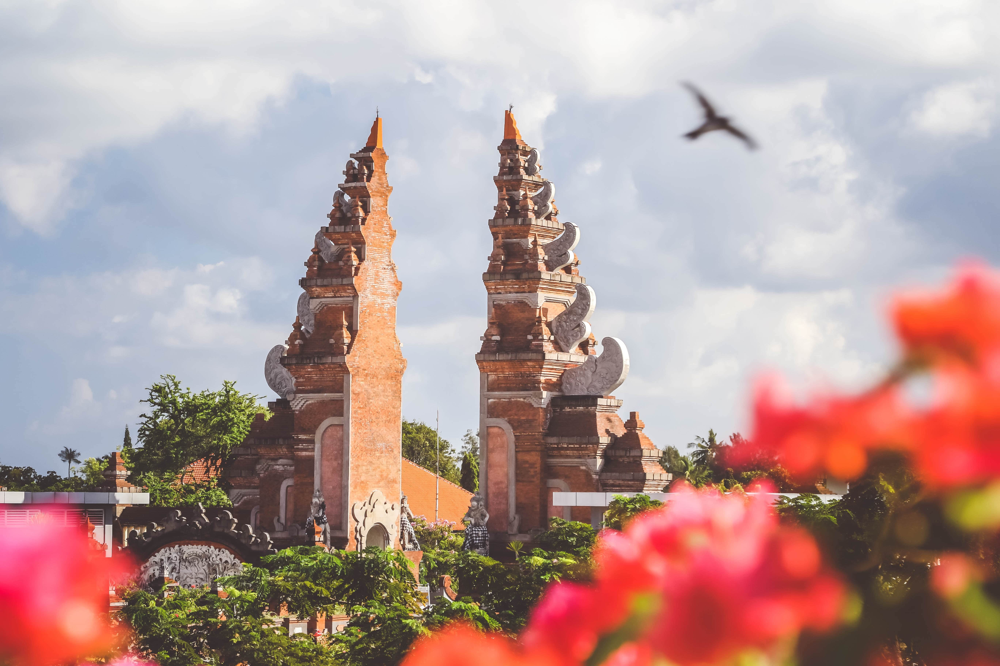

Indonesia
Profil
Populasi penduduk yang menganut agama Islam di Indonesia tercatat sekitar 84% atau 229 juta jiwa, menurut nationsonline.org. Mayoritas penduduk muslim di Indonesia adalah Sunni. Ada juga Islam Syiah sebanyak 0,43%. Sementara, agama lain didominasi oleh Kristen.
Indonesia merupakan negara terbesar ke-14 sekaligus negara kepulauan terbesar di dunia dengan luas wilayah sebesar 1.904.569 km2, serta negara dengan pulau terbanyak keenam di dunia, dengan jumlah 17.504 pulau. Nama alternatif yang umum dipakai untuk merujuk pada "Kepulauan Indonesia" tersebut adalah Nusantara. Selain itu, Indonesia juga menjadi negara berpenduduk terbanyak keempat di dunia dengan populasi mencapai 270.203.917 jiwa pada tahun 2020, serta negara berpenduduk Muslim terbanyak dan terbesar di dunia, dengan penganut lebih dari 230 juta jiwa. Indonesia adalah salah satu negara multiras, multietnik, dan multikultural di dunia, seperti halnya Amerika Serikat.